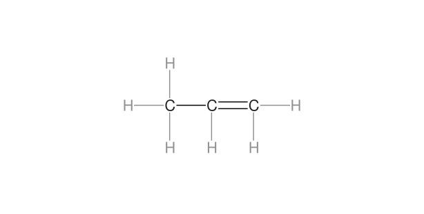
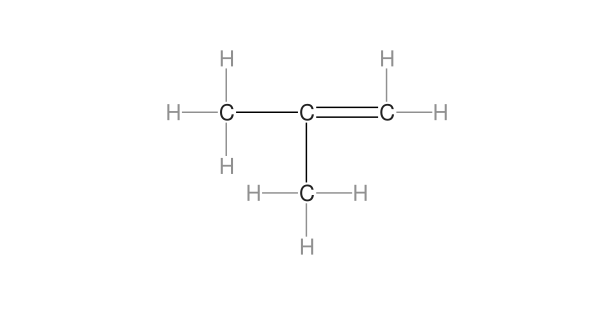
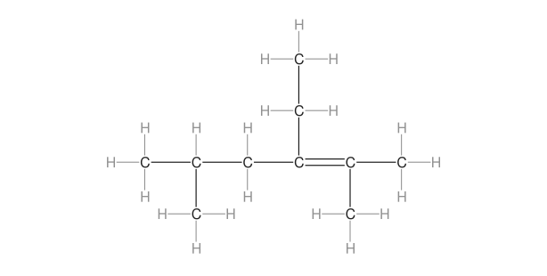
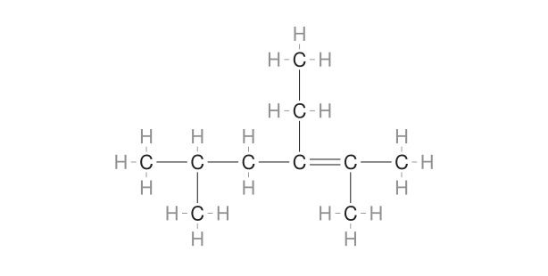

Μήκη δεσμών στους ανεπτυγμένους των αλκενίων
31 Οκτωβρίου 2026 · Τοπική κύρια έκδοση Namelecule
Η ενσωμάτωση και ο ανεξάρτητος τελικός έλεγχος ολοκληρώθηκαν χωρίς ευρήματα. Η αλλαγή είναι τοπική.
Χρησιμοποιήθηκαν ως πρότυπα οι αρχικές καταχωρίσεις αιθενίου, προπενίου και βουτενίων του καθηγητή. Τα τρία δικά μας αλκένια ακολουθούν την ίδια σύμβαση διάταξης. Εφαρμόστηκαν και στα επτά οι τελικές αναλογίες που είχαμε εγκρίνει για τα αλκάνια.
Στα MOL: C–H 0,3094 · C–C και C=C 0,6188. Οι οριζόντιες και κατακόρυφες αποστάσεις είναι ίσες. Οι C=C διατηρούν δύο γραμμές και την ίδια τάξη δεσμού. Ο viewer κρατά την κοινή αναλογία ως προς τα γράμματα, ώστε η αυτόματη μεγέθυνση να μην αναιρεί τη συντόμευση.
προπένιο
Πριν
Μετά
2-μεθυλοπροπένιο
Πριν
Μετά
3-αιθυλο-2,5-διμεθυλο-2-εξένιο
Πριν
Μετά
Έλεγχοι και όρια
Πριν και μετά καταγράφηκαν και οι τρεις μορφές των επτά αλκενίων σε δύο πλάτη (42 περιπτώσεις ανά φάση). Πέρασαν 108 καταστάσεις επιλογής, zoom, αρίθμησης, επισημάνσεων, απόκρυψης/επανεμφάνισης και εξαγωγής PNG, χωρίς επαφές δεσμών–γραμμάτων, κρυμμένες γραμμές, περικοπή ή σφάλματα JavaScript.
Αναπαράχθηκαν και τα 22 βήματα του ενεργού μαθήματος σε δύο πλάτη, με πρόσθετο προηγούμενο/επόμενο στο ανεπτυγμένο βήμα: συνολικά 48 καταστάσεις και δύο επιτυχημένες έξοδοι προς τη βιβλιοθήκη.
Ο τελικός έλεγχος κάλυψε και τις 422 διαθέσιμες μορφές σε δύο πλάτη: 844 περιπτώσεις, χωρίς επαφές δεσμών–γραμμάτων, κρυμμένες γραμμές, περικοπή ή σφάλματα JavaScript. Τα ονόματα, τα κείμενα ετικετών και οι μοριακοί γράφοι έμειναν ίδια. Επαληθεύτηκαν και τα οκτώ αλκάνια.
Ο ανεξάρτητος Chemistry Validator επιβεβαίωσε τους μοριακούς τύπους, τα σθένη, τους γράφους και την αντιστοίχιση των τριών μορφών 2D με το 3D και στα επτά μόρια. Διατηρήθηκαν οι αριθμοί ατόμων, οι τάξεις δεσμών, τα ονόματα και όλα τα μη γεωμετρικά πεδία.
Στο πολύ μικρό zoom, τα ορθογώνια χώρου κειμένου που αναφέρει ο Firefox μπορεί να επικαλύπτονται. Η αρχική διαγνωστική ένδειξη ελέγχθηκε με τις πραγματικές διαστάσεις των γραμμάτων και τη ζωγραφισμένη εικόνα: δεν υπήρχε σύγκρουση γραμμάτων ή επαφή με δεσμό. Διορθώθηκε μόνο το κριτήριο της δοκιμής.
Οι έλεγχοι έγιναν σε απομονωμένο Firefox στο συγκεκριμένο Mac· τα 390 px είναι responsive emulation. Δεν αποτελούν δοκιμή Safari/Chrome/Windows, όλων των ιστορικών αντιγράφων μαθημάτων ή πλήρη πρόβα συνεδρίου. Το j2s του 3D εξακολουθεί να εξαρτάται από την υπάρχουσα ρύθμιση εξωτερικής υπηρεσίας.
Διατήρηση και επαναφορά
Δεν τροποποιήθηκαν συνεπτυγμένοι, σκελετικοί, core, 3D, σενάρια JSON ή React. Διατηρήθηκαν τα αλκάνια και η προηγούμενη διόρθωση γραμμάτων. Υπάρχει επιλεκτική επαναφορά των έξι αρχείων εφαρμογής, δοκιμασμένη σε απομονωμένο αντίγραφο, που αρνείται να καλύψει νεότερες αλλαγές.
Η αλλαγή είναι αποθηκευμένη τοπικά, χωρίς commit ή δημοσίευση.
Ανεξάρτητος έλεγχος · Σύνοψη · Χημικός έλεγχος · Αρχικά πρότυπα · Αρχεία επαναφοράς · Namelecule